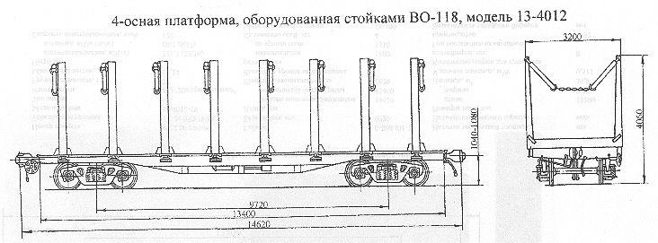

Назначение: для перевозки военного оборудования
Параметры
| Номер проекта | |
| Технические условия | ТУ 24.05.819-83 |
| Модель вагона | 13-4012 |
| Тип вагона | |
| Изготовитель | АО "Днепровагонмаш" |
| Грузоподъемность, т | 68 |
| Масса тары вагона, т | 24 |
| Нагрузка: статическая осевая, кН(тс) |
225,4(23) |
| погонная, кН/м(тс/м) | 61,7(6,29) |
| Скорость конструкционная, км/ч | 120 |
| Габарит | 1-Т |
| База вагона, мм | 9720 |
| Длина, мм: по осям сцепления автосцепок |
14620 |
| по концевым балкам рамы | 13400 |
| Ширина максимальная, мм | 3200 |
| Высота от уровня верха головок рельсов, мм: максимальная |
4060 |
| до уровня пола | 1310 |
| Количество осей, шт. | 4 |
| Модель 2-осной тележки | 18-100 |
| Наличие переходной площадки | нет |
| Наличие стояночного тормоза | есть |
| Количество стоек, шт. | 16 |
| Площадь, м² | 36,8 |
| Удельная площадь, м²/т | 0,541 |
| Расчетный объем погрузочного пространства, м³ | 108 |
| Длина перевозимого груза, м | от 3 до 13,5 |
| Год постановки на серийное производство | 1983 |
| Возможность установки буфера | нет |